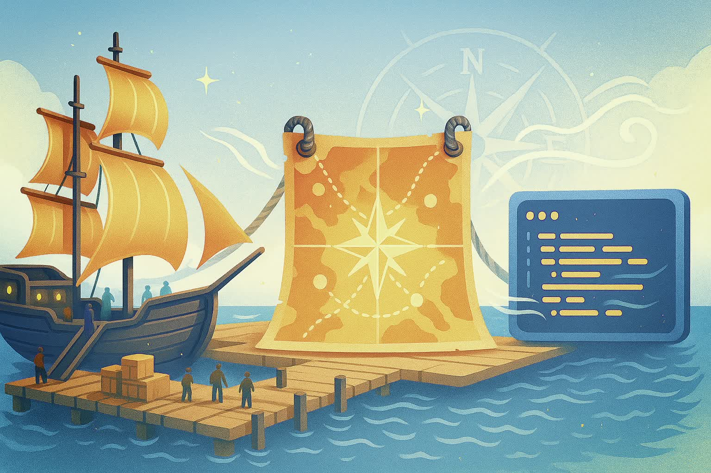

g.Pype Training
Welcome to the g.Pype Training! This structured course is designed to help you getting started with g.Pype and progressively build your skills. Each season focuses on a specific theme, guiding you through practical episodes that cover key concepts and functionalities of g.Pype.
Note that parts of the training are still under development. We are continuously adding new episodes and improving existing ones. Stay tuned for updates!
Season 1: Boarding
Install g.Pype, run your first script, and prepare for departure.
This season prepares you for your first adventures with g.Pype, with the sails set and the basics at hand.
In this episode, you are setting up your development environment for g.Pype.
In this episode, you write your first g.Pype script and run it.
In this episode, you learn how to generate test signals with g.Pype.
In this episode, you learn how to adjust data visualization in g.Pype.
Season 2: Easy Drifting
Explore basic building blocks and practice smooth navigation.
In this season, you learn to use the essential library nodes of g.Pype, keeping a steady course through calm waters.
In this episode, you learn how to apply standard filters to your data using g.Pype.
In this episode, you learn how to route signals between nodes in a g.Pype pipeline.
In this episode, you learn how to apply basic mathematical transforms to your EEG data using g.Pype.
In this episode, you learn how to use a moving average filter with g.Pype.
In this episode, you learn how to decimate (downsample) your signals with g.Pype.
In this episode, you learn how to perform spectral analysis using the Fast Fourier Transform (FFT) in g.Pype.
Season 3: Gearing Up
Connect real devices and bring live signals on board.
After Season 3, you are able to use hardware with g.Pype, your vessel fully equipped for the voyage ahead.
In this episode, you learn how to record EEG data with g.Pype and the BCI Core-8.
In this episode, you learn how to record EEG data with g.Pype and g.Nautilus.
In this episode, you learn how to capture keystrokes with g.Pype.
Season 4: Crossing Borders
Learn to exchange data through different interfaces.
After Season 4, you can link g.Pype to external sources and sinks, opening gateways to new territories.
In this episode, you learn how to save EEG data to a file using g.Pype.
In this episode, you learn how to send EEG data through an LSL (Lab Streaming Layer) interface using g.Pype.
In this episode, you learn how to send EEG data through a UDP (User Datagram Protocol) interface using g.Pype.
Season 5: Engaging Senses
Use audiovisual stimuli to immerse yourself in paradigms.
After Season 5, you can run paradigms with ParadigmPresenter, turning your journey into a sensory experience.
In this episode, you learn how to use Paradigm Presenter with g.Pype.
In this episode, you learn how to work with triggering data in g.Pype.
In this episode, you learn how to record Auditory Evoked Potentials (AEPs) using g.Pype.
In this episode, you learn how to conduct an auditory oddball paradigm experiment using g.Pype.
In this episode, you learn how to perform a visual categorization task using g.Pype.